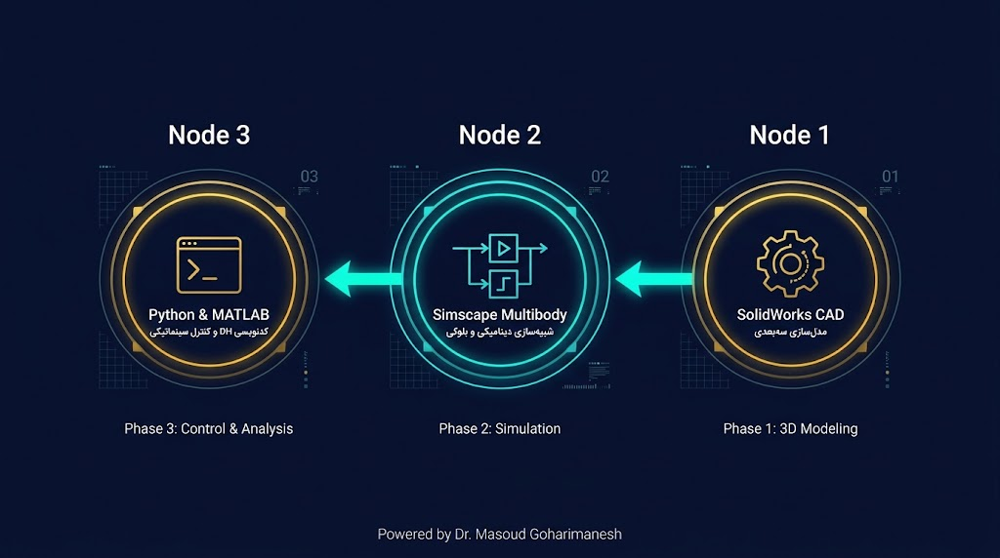

مدلسازی ربات دو لینکی در متلب، پایتون و سالیدورکس
پیوند کامل طراحی مکانیکی (CAD)، شبیهسازی فیزیکی بلوکی (Simscape Multibody)،
جبر خطی در MATLAB و پیادهسازی مدرن در Python و ابزارهای آنلاین.
چرا به سه محیط مجزا نیاز داریم؟
تلاقی هندسه، شبیهسازی سیستم و الگوریتمهای حرکتی
۱. مدلسازی CAD (دقت فیزیکی)
استخراج دقیق مرکز جرم (COM)، تنسور اینرسی و برخوردهای هندسی در SolidWorks.
۲. سیمولینک و سیممکانیکس
شبیهسازی دینامیک چندجسمی بدون نیاز به نوشتن دستی معادلات لاگرانژ.
۳. پایتون و متلب (الگوریتمها)
توسعه الگوریتمهای بلادرنگ سینماتیک مستقیم، ژاکوبین و اتصال به ROS.
چرخه کار مهندسی (Engineering Workflow)
نقشه راه انتقال داده از ایده تا شبیهسازی نهایی

نکته کلیدی: هرگز شبیهسازی را از برنامهنویسی خام شروع نکنید! ابتدا ابعاد و جرم را در CAD بسنجید، سپس به مدل بلوکی وارد کرده و در نهایت با کد ریاضی تایید کنید.
اصول طراحی بازوی ۲R در SolidWorks
نکات ضروری برای سازگاری اسمبلی با محیطهای دینامیکی
تنظیم تکیهگاه و Frame 0
پایه ربات (Base) باید به عنوان جزء Fix در مبدأ مختصات اصلی اسمبلی قرار گیرد تا دستگاه اینرسی جهانی مخدوش نشود.
قیدگذاری استاندارد مفاصل (Mates)
برای هر مفصل دورانی فقط از دو قید استفاده کنید: هممحوری (Concentric) و انطباق سطوح (Coincident) تا ۱ درجه آزادی آزاد بماند.
تخصیص جنس و خواص جرمی
تخصیص متریال واقعی (پلکسیگلاس یا آلومینیوم ۶۰۶۱) در تب Mass Properties جهت استخراج ماتریس اینرسی صحیح.
سیستم مختصات اختصاصی (Coordinate System)
تعریف Reference Coordinate System در محل هر مفصل بر اساس اصول DH برای سادگی ردیابی ماتریسهای انتقال.
پل ارتباطی: Simscape Multibody Link
نحوه خروجی گرفتن بدون خطا از SolidWorks
۱. فعالسازی Add-in
فعالسازی تیک Simscape Multibody Link در منوی Add-ins سالیدورکس.
۲. استخراج XML
انتخاب Export > Simscape Multibody برای تولید فایل تعریفی XML و فایلهای فرمت STEP.
۳. ایمپورت در MATLAB
اجرای دستور smimport('Robot2R.xml') در کامند لاین متلب برای ساخت خودکار مدل سیمولینک.
% دستور اجرای ایمپورت مدل مکانیکی سالیدورکس در متلب: smimport('TwoLinkRobot.xml');
مفهوم تبدیل مفاصل: از CAD تا بلوکهای سیممکانیکس
مشاهده نحوه معادلسازی قیدهای فیزیکی به المانهای تحلیلی
قید هممحوری CAD
SolidWorks Mate
فایل واسط ساختار
TwoLinkRobot.xml
بلوک Revolute Joint
Simscape Multibody
ساختار بلوکهای پایه در Simscape Multibody
چهار رکن اصلی برای شبیهسازی فیزیکی زنجیرههای رباتیکی
World Frame & Mechanism Config
مبدأ مرجع اینرسی جهانی و تعریف شتاب گرانش محیطی ($\mathbf{g} = [0, 0, -9.81]\, m/s^2$).
Solid Block (لینکها)
شامل خواص هندسی (Geometry)، جرم، ماتریس ممان اینرسی و رنگآمیزی ظاهری لینکهای صلب.
Revolute Joint (مفصل دورانی)
ایجاد چرخش تکمحوره بین دو دستگاه فریم (Base و Follower) همراه با پورتهای سنسور زاویه و ورودی گشتاور.
Rigid Transform
اعمال چرخشها و جابجاییهای ثابت میان لینکها و نقاط اتصال دقیقا بر اساس پارامترهای $a, \alpha, d$.
فرمولاسیون DH آماده برای پیادهسازی در اسکریپت
یادآوری جدول DH و ماتریس تبدیل همگن لینکهای ۱ و ۲